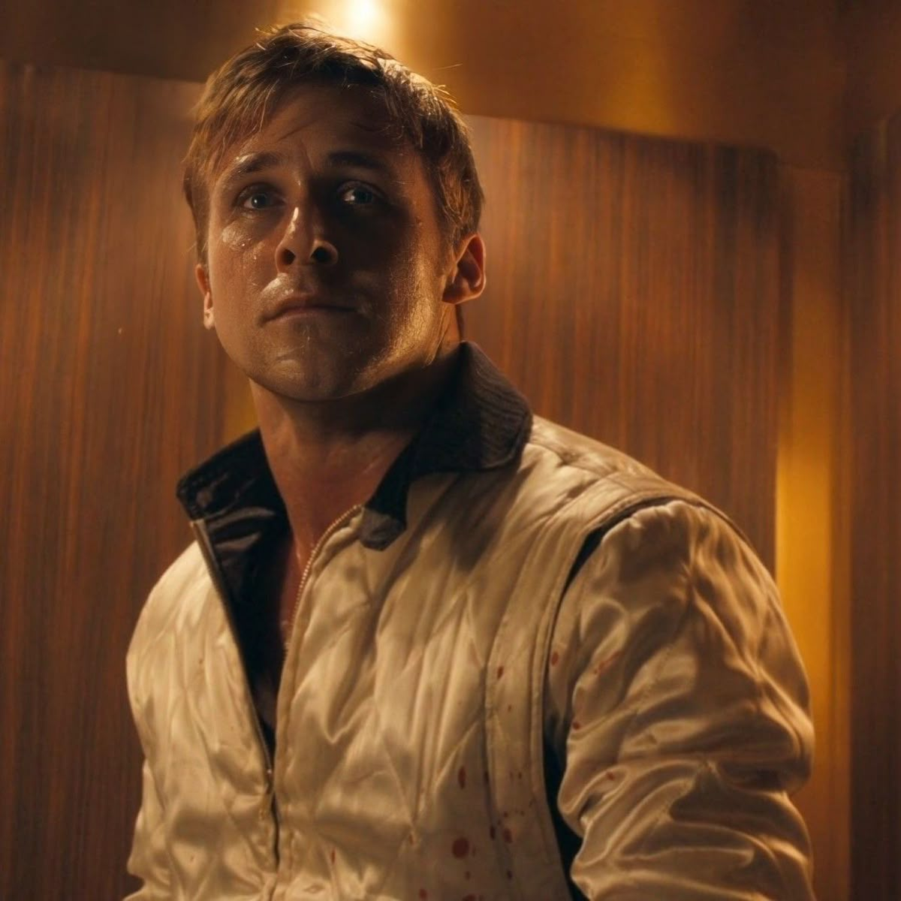

Pelicula increible. Puedo verla una y otra vez sin cansarme. I drive.

Tiene todo, buena historia, complejidad psicologica, buen soundtrack,
increible final.
Y una cosa mas...
Que asco.
Serie increible, me hizo adentrarme en el mundo post apocaliptico
y
descubrir que era una de mis mayores pasiones, por siempre mi serie favorita.
My mercy, prevails, over my wrath